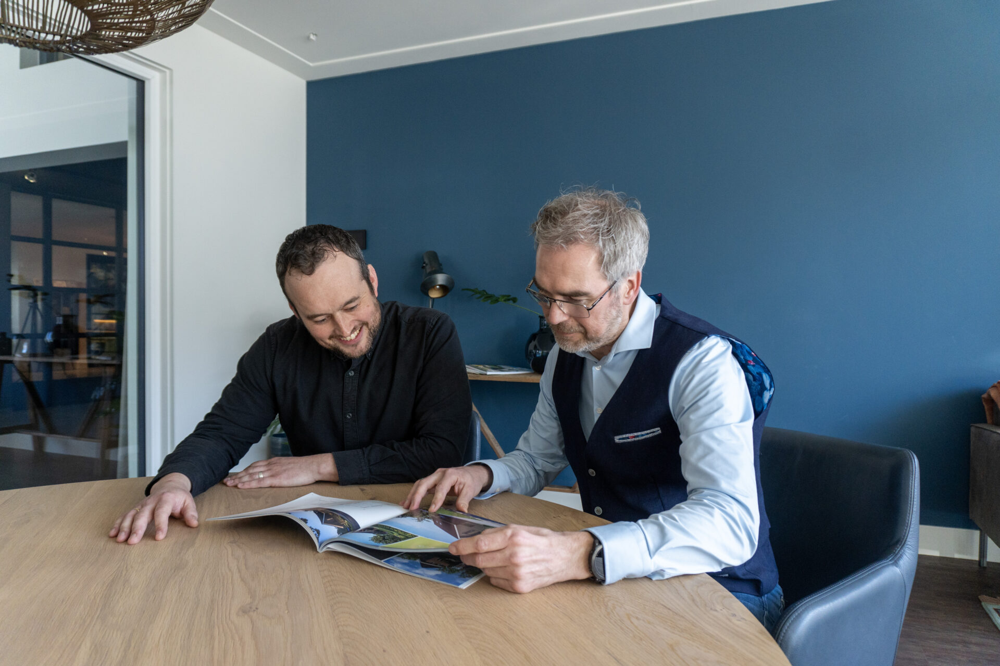
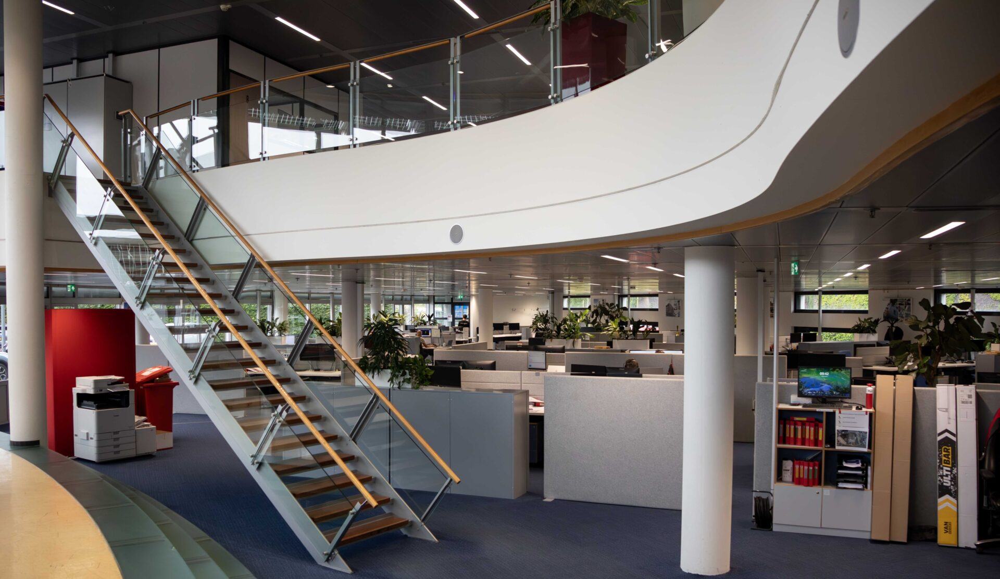

Welke kennis heeft je team straks nodig?
Incompany is bij ons meer dan dezelfde training op jouw kantoor. We kijken naar wat jouw mensen in hun werk nodig hebben, nu en over twee jaar, en bouwen daar het leren omheen. Onderwijskundig én inhoudelijk, in één team.

Van één training tot een eigen academy
Je hoeft niet groot te beginnen. Veel trajecten starten met één opleiding voor één team en groeien van daaruit.
Welke kennis heeft je team over drie jaar nodig?
Geen reorganisatie, wel een ontwikkelplan. Voor elke functie brengen we in beeld welke werkzaamheden veranderen, welke vaardigheden belangrijker worden en welk leerpad daarbij past. Hieronder het voorbeeld van de werkvoorbereider.
Tekeningen uitwerken, hoeveelheden, planning, inkoop
Hetzelfde doen we voor modelleur, calculator, uitvoerder, projectleider en HR zelf. Het resultaat is een skills-overzicht per functie en een leerpad dat past bij jullie projecten en tempo. Bespreek je ontwikkelvraag met Melvin.
Zo pakken we het aan
Geen intakeformulier van veertien velden. Een gesprek, een voorstel op één A4 en dan aan het werk. Wordt het groter, dan groeit incompany door naar het Digital Fit Partnership.

“We spreken elkaar. We dagen elkaar uit. BIM is niet meer iets van een paar specialisten, het is hoe we werken.”Mark Schuijer · Consultant Business Development Lees het verhaal
Met wie je te maken krijgt
Geen accountmanager ertussen. De mensen die het traject ontwerpen en geven, zijn ook de mensen die je belt.
{{ t.vraag }}
Werkt o.a. voor {{ t.klanten }}Veelgestelde vragen
Staat je vraag er niet bij? Bel of WhatsApp Melvin; dat is sneller dan zoeken.
{{ f.antwoord }}
De techniek wacht niet. Je mensen wel, als je ze niet meeneemt.
Software en AI veranderen elk jaar. Wat blijft, is de organisatie die kennis borgt, overdraagt en snel kan bijsturen. Daar begin je liever dit kwartaal mee dan volgend jaar.
Bespreek de mogelijkheden
Bellen of WhatsAppen is het snelst. Liever dat wij bellen? Laat je naam en nummer achter. Op werkdagen belt Melvin je dezelfde dag terug, anders de volgende ochtend voor 10.00 uur.